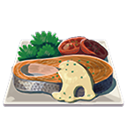

Salmon Meuinere

Description:
"The crispy skin of this fried hearty salmon puts
it's texture in a class all its own,"
-Inventory, Breath of the Wild
Ingredients
- Hearty Salmon
- Tabantha Wheat
- Goat Butter
Steps
- Gather the ingredients
- Throw them in the cooking pot!